공인중개사-2차 (2019-10-26 기출문제)
1과목: 임의구분
1. 공인중개사법령에 관한 내용으로 틀린 것은? (다툼이 있으면 판례에 따름)
- 개업공인중개사에 소속된 공인중개사로서 중개업무를 수행하거나 개업공인중개사의 중개업무를 보조하는 자는 소속공인중개사이다.
- 개업공인중개사인 법인의 사원으로서 중개업무를 수행하는 공인중개사는 소속공인중개사이다.
- 무등록 중개업자에서 중개를 의뢰한 거래당사자는 무등록 중개업자의 중개해위에 대하여 무등록 중개업자와 공동정범으로 처벌된다.
- 개업공인중개사는 다른 개업공인중개사의 중개보조원 또는 개업공인중개사인 법인의 사원·임원이 될 수 없다.
- 거래당사자간 지역권의 설정과 취득을 알선하는 행위는 중개에 해당한다.
(정답률: 60%)

2. 공인중개사법령상 중개사무소 개설등록의 결격사유에 해당하지 않는 자는?
- 공인중개사법을 위반하여 200만원의 벌금형의 선고를 받고 3년이 경과되지 아니한 자
- 금고 이상의 실형의 선고를 받고 그 집행이 종료되거나 집행이 면제된 날부터 3년이 경과되지 아니한 자
- 공인중개사의 자격이 취소된 후 3년이 경과하지 아니한 자
- 업무정지처분을 받은 개업공인중개사인 법인의 업무정지의 사유가 발생한 당시의 사원 또는 임원이었던 자로서 당해 개업공인중개사에 대한 업무정지기간이 경과되어 아니한 자
- 공인중개사의 자격이 정지된 자로서 자격정지기간 중에 있는 자
(정답률: 55%)
3. 공인중개사법령상 공인중개사 자격시험 등에 관한 설명으로 옳은 것은?
- 국토교통부장관이 직접 시험을 시행하려는 경우에는 미리 공인중개사 정책심의위원회의 의결을 거치지 않아도 된다.
- 공인중개사자격증의 재교부를 신청하는 자는 재교부신청서를 국토교통부장관에게 제출해야 한다.
- 국토교통부장관은 공인중개사시험의 합격자에게 공인중개사자격증을 교부해야 한다.
- 시험시행기관장은 시험에서 부정한 행위를 한 응시자에 대해서는 그 시험을 무효로 하고, 그 처분이 있은 날부터 5년간 시험응시자격을 정지한다.
- 시험시행기관장은 시험을 시행하고자 하는 때에는 시험시행에 관한 개략적인 사항을 전년도 12월 31일까지 관보 및 일간신문에 공고해야 한다.
(정답률: 60%)
4. 공인중개사법령상 중개대상물에 해당하지 않는 것을 모두 고른 것은?
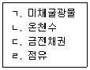
- ㄱ, ㄴ
- ㄷ, ㄹ
- ㄱ, ㄴ, ㄹ
- ㄴ, ㄷ, ㄹ
- ㄱ, ㄴ, ㄷ, ㄹ
(정답률: 62%)
5. 공인중개사법령상 중개사무소의 설치 등에 관한 설명으로 틀린 것은?
- 개업공인중개사는 그 등록관천의 관할구역안에 1개의 중개사무소만을 둘수 있다.
- 개업공인중개사는 천막 그 밖에 이동이 용이한 임시 중개시설물을 설치하여서는 아니된다.
- 법인이 아닌 개업공인중개사는 분사무소를 둘수 없다.
- 개업공인중개사는 등록관청의 관할구역 외의 지역에 있는 중개대상물을 중개할 수 없다.
- 법인인 개업공인중개사는 등록관청에 신고하고 그 관할 구역 외의 지역에 분사무소를 둘 수 있다.
(정답률: 58%)
6. 공인중개사법령상 “공인중개사협회”(이하 ‘협회’라 함)에 관한 설명으로 옳은 것은?
- 협회는 영리사업으로서 회원간의 상호부조를 목적으로 공제사업을 할 수 있다.
- 협회는 총회의 의결내용을 지체 없이 등록관청에게 보고하고 등기하여야 한다.
- 협회가 그 지부 또는 지회를 설치한 때에는 그 지부는 시·도지사에게 지회는 등록관청에 신고하여야 한다.
- 협회는 개업공인중개사에 대한 행정체제처분의 부과와 집행의 업무를 할 수 있다.
- 협회는 부동산 정보제공에 관한 업무를 직접 수행할 수 없다.
(정답률: 55%)
7. 공인중개사법령상 인장등록 등에 관한 설명으로 틀린 것은?
- 법인인 개업공인중개사의 인장등록은 상업등기규칙에 따른 인감증명서의 제출로 갈음한다.
- 소속공인중개사가 등록하지 아니한 인장을 중개행위에 사용한 경우, 등록관청은 1년의 범위 안에서 업무의 정지를 명할 수 있다.
- 인장의 등록은 중개사무소 개설등록신청과 같이 할 수 있다.
- 소속공인중개사의 인장등록은 소속공인중개사에 대한 고용신과와 같이 할 수 있다.
- 개업공인중개사가 등록한 인장을 변경한 경우, 변경일부터 7일 이내에 그 변경된 인장을 등록관청에 등록하여야 한다.
(정답률: 55%)
8. 공인중개사법령상 “공인중개사 정책심의위원회”(이하 ‘심의위원회’라 함)에 관한 설명으로 틀린 것은?
- 국토교통부에 심의위원회를 둘 수 있다.
- 심의위원회는 위원장 1명을 포함하여 7명 이상 11명 이내의 위원으로 구성한다.
- 심의위원회의 위원이 해당 안건에 대하여 자문을 한 경우 심의위원회 심의·의결에서 제척된다.
- 심의위원회의 위원장이 부득이한 사유로 직무를 수행할 수 없을 때에는 부위원장이 그 직무를 대행한다.
- 심의위원회 회의는 재적위원 과반수의 출석으로 개의(開議)하고, 출석위원 과반수의 찬성으로 의결한다.
(정답률: 50%)
9. 공인중개사법령상 법인의 개업공인중개사가 겸업할수 있는 것을 모두 고른 것은? (단, 다른 법률의 규정은 고려하지 않음.)
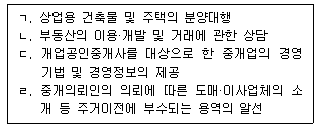
- ㄱ
- ㄱ, ㄷ
- ㄱ, ㄷ, ㄹ
- ㄴ, ㄷ, ㄹ
- ㄱ, ㄴ, ㄷ, ㄹ
(정답률: 56%)
10. 공인중개사법령상 개업공인중개사의 고용인에 관한 설명으로 틀린 것은? (다툼이 있으면 판례에 따름)
- 중개보조원의 업무상 행위는 그를 고용한 개업공인중개사의 행위로 본다.
- 개업공인중개사는 중개보조원과의 고용관계가 종료된 때에는 고용관계가 종료된 날부터 14일 이내에 등록관청에 신고하여야 한다.
- 중개보조원이 중개업무와 관련된 행위를 함에 있어서 과실로 거래당사자에게 손해를 입힌 경우, 그를 고용한 개업공인중개사 뿐만 아니라 중개보조원도 손해배상책임이 있다.
- 개업공인중개사가 소속공인중개사를 고용한 경우에는 개업공인중개사 및 소속공인중개사의 공인중개사자격증 원본을 중개사무소에 계시하여야 한다.
- 중개보조원의 고용신고는 전자문서에 의해서도 할 수 있다.
(정답률: 52%)
11. 공인중개사법령상 개업공인중개사가 의뢰받은 중개대상물에 대하여 표시·광고를 하려는 경우 ‘중개사무소, 개업공인중개사에 관한 사항’으로서 명시해야 하는 것을 모두 고른 것은?
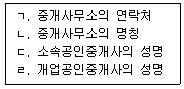
- ㄱ, ㄴ
- ㄴ, ㄷ
- ㄷ, ㄹ
- ㄱ, ㄴ, ㄹ
- ㄱ, ㄷ, ㄹ
(정답률: 59%)
12. 공인중개사법령상 중개대상물의 확인·설명에 관한 내용으로 옳은 것은? (다툼이 있으면 판례에 따름)
- 개업공인중개사는 선량한 관리자의 주의로 중개대상물의 권리관계 등을 조사·확인하여 중개의뢰인에게 설명할 의무가 있다.
- 2명의 개업공인중개사가 공동중개한 경우 중개대상물확인·설명서에는 공동중개한 개업공인중개사 중 1인만 서명·날인하면 된다.
- 개업공인중새는 중개대상물에 대한 확인·설명을 완성한 후 해야 한다.
- 중개보조원은 중개의뢰인에게 중개대상물의 확인·설명의무를 진다.
- 개업공인중개사는 중개대상물 학인·설명서를 작성하여 거래대상자에게 교부하고 그 원본을 5년간 보존하여야 한다.
(정답률: 53%)
13. 공인중개사법령사 부동산거래정보망의 지정 및 이용에 관한 설명으로 틀린 것은?
- 국토교통부장관은 부동산거래정보망을 설치·운영할 자를 지정할 수 있다.
- 부동산거래정보망을 설치·운영할 자로 지정을 받을 수 있는 자는 전기통신사업법의 규정에 의한 부가통신사업자로서 국토교통령이 정하는 요건을 갖춘 자이다.
- 거래정보사업자는 지정받은 날부터 3월 이내에 부동산 거래정보망의 이용 및 정보제공방법 등에 관한 운영규정을 정하여 국토교통부장관의 승인을 얻어야 한다.
- 거래정보사업자가 부동산거래정보망의 이용 및 정보제공방법 등에 관한 운영규정을 변경하고자 하는 경우 국토교통부장관의 승인을 얻어야 한다.
- 중개정보사업자는 개업공인중개사로부터 공개를 의뢰받은 중개대상물의 정보를 개업공인중개사에 따라 차별적으로 공개할 수 있다.
(정답률: 59%)
14. 공인중개사법령상 금지행위에 관한 설명으로 옳은 것은?
- 법인인 개업공인중개사의 사원이 중개대상물의 매매를 업으로 하는 것은 금지되지 않는다.
- 개업공인중개사가 거래당사자 쌍방을 대리하는 것은 금지되지 않는다.
- 개업공인중개사가 중개의뢰인과 직접 거래를 하는 행위는 금지된다.
- 법인인 개업공인중개사의 임원이 중개의뢰인과 직접거래를 하는 것은 금지되지 않는다.
- 중개보조원이 중개의뢰인과 직접 거래를 하는 것은 금지되지 않는다.
(정답률: 56%)
15. 공인중개사법령상 개업공인중개사의 휴업과 폐업 등에 관한 설명으로 틀린 것은?
- 부동산중개업휴업신고서의 서식에 있는 ‘개업공인중개사의 종별’란에는 법인, 공인중개사, 법 제7638호 부칙 제6조 제2항에 따른 개업공인중개사가 있다.
- 개업공인중개사가 부동산중개업폐업신고서를 작성하는 경우에는 폐업기간, 부동산중개업 휴업신고서를 작성하는 경우에는 휴업기간을 기재하여야 한다.
- 중개사무소의 개설등록 후 업무를 개시하지 않은 개업공인중개사라도 3월을 초과하는 휴업을 하고자 하는 때에는 부동산중개업휴업신고서에 중개사무소등록증을 첨부하여 등록관청에 미리 신고하여야 한다.
- 개업공인중개사가 등록관청에 폐업사실을 신고한 경우에는 지체없이 사무소의 간판을 철거하여야 한다.
- 개업공인중개사가 취학을 하는 경우 6월을 초과하여 휴업을 할 수 있다.
(정답률: 51%)
16. 공인중개사법령상 계약금등의 반환채무이행의 보장 등에 관한 설명으로 틀린 것은?
- 개업공인중개사는 거래의 안전을 보장하기 위하여 필요하다고 인정하는 경우, 계약금등을 예치하도록 거래당사자에게 권고할 수 있다.
- 예치대상은 계약금·중도금 또는 잔금이다.
- 보험업법에 따를 보험회사는 계약금등의 예치명의자가 될 수 있다.
- 개업공인중개사는 거래당사자에게 공인중개사법에 따를 공제사업을 하는 자의 명의로 계약금등을 예치하도록 권고할 수 없다.
- 개업공인중개사는 계약금등을 자기 명의로 금융기관 등에 예치하는 경우 자기 소유의 예치금과 분리하여 관리될 수 있도록 하여야 한다.
(정답률: 50%)
17. 중개의뢰인 甲은 자신 소유의 X부동산에 대한 임대차계약을 위해 개업공인중개사 乙과 전속중개계약을 체결하였다. X부동산에 기존 임차인 丙, 저당권자 丁이 있는 경우 乙이 부동산거래정보망 또는 일간신문에 공개해야만 하는 중개대상물에 관한 정보를 모두 고른 것은? (단, 중개의뢰인이 비공개 요청을 하지 않음)
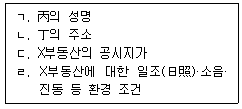
- ㄹ
- ㄱ, ㄴ
- ㄷ, ㄹ
- ㄱ, ㄴ, ㄹ
- ㄱ, ㄴ, ㄷ, ㄹ
(정답률: 46%)
18. 공인중개사법령상 조례가 정하는 바에 따라 수수료를 납부해야 하는 경우를 모두 고른 것은?
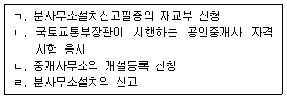
- ㄱ, ㄴ
- ㄱ, ㄴ, ㄹ
- ㄱ, ㄷ, ㄹ
- ㄴ, ㄷ, ㄹ
- ㄱ, ㄴ, ㄷ, ㄹ
(정답률: 46%)
19. 무주택자인 甲이 택을 물색하여 매수하기 위해 개업공인중개사인 乙과 일반중개계약을 체결하고자 한다. 이 경우 공인중개사법령사 표준서식인 일반중개계약서에 기재하는 항목을 모두 고른 것은?
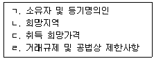
- ㄷ
- ㄱ, ㄴ
- ㄴ, ㄷ
- ㄷ, ㄹ
- ㄱ, ㄴ, ㄷ
(정답률: 50%)
20. 공인중개사법령상 중개사무소 개설등록의 절대적 취소 사유가 아닌 것은?
- 개업공인중개사인 법인이 해산한 경우
- 자격정지처분을 받은 소속공인중개사로 하여금 자격정지기간 중에 중개업무를 하게 한 경우
- 거짓 그 밖에 부정한 방법으로 중개사무소의 개설등록을 한 경우
- 법인이 아닌 개업공인중개사가 파산신고를 받고 복권되지 아니한 경우
- 공인중개사법령을 위반하여 2 이상의 중개사무소를 둔 경우
(정답률: 43%)
21. 공인중개사법 시행령 제 30조(협회의 설립)의 내용이다. ( )에 들어갈 숫자를 올바르게 나열한 것은?
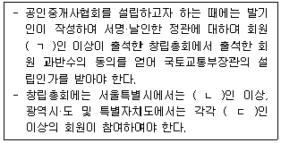
- ㄱ: 300, ㄴ: 50, ㄷ: 20
- ㄱ: 300, ㄴ: 100, ㄷ: 50
- ㄱ: 600, ㄴ: 50, ㄷ: 20
- ㄱ: 600, ㄴ: 100, ㄷ: 20
- ㄱ: 800, ㄴ: 50, ㄷ: 50
(정답률: 47%)
22. 공인중개사법령상 중개업무를 수행하는 소속공인중개사의 자격정지사유에 해당하지 않는 것은?
- 고객을 위하여 거래내용에 부합하는 동일한 거래내약서를 4부 작성한 경우
- 2이상의 중개사무소에 소속된 경우
- 고객의 요청에 의해 거래계약서에 거래금액을 거짓으로 기재한 경우
- 권리를 취득하고자 하는 중개의뢰인에게 중개가 완성되기 전까지 등기사항증명서 등 확인·설명의 근거자료를 제시하지 않은 경우
- 법인의 분사무소의 책임자가 서명 및 날인 하였기에 당해 중개행위를 한 소속공인중개사가 확인·설명서에 서명 및 날인을 하지 않은 경우
(정답률: 53%)
23. 공인중개사법령상 공제사업에 관한 설명으로 틀린 것은?
- 공인중개사협회는 공제사업을 하고자 하는 때에는 공제규정을 제정하여 국토교통부장관의 승인을 얻어야 한다.
- 금융감독원의 원장은 국토교통부장관의 요청이 있는 경우에는 공제사업에 관하여 조사 또는 검사를 할 수 있다.
- 공인중개사협회는 책임준비금을 다른 용도로 사용하고자 하는 경우에는 국토교통부장관의 승인을 얻어야 한다.
- 책임준비금의 적립비율은 공제사고 발생률 및 공제금 지급액 등을 종합적으로 고려하여 정하되, 공제료 수입액의 100분의 10이상으로 정한다.
- 공인중개사협회는 회계연도 종료 후 6개월 이내에 매년도의 공제사업 운용실적을 일간신문·협회보 등을 통하여 공제계약자에게 공시하여야 한다.
(정답률: 47%)
24. 공인중개사법령상 공인중개사의 자격취소에 관한 설명으로 옳은 것은?
- 공인중개사의 자격취소처분을 공인중개사의 현주소지를 관할하는 시장·군수·구청장이 행한다.
- 시·도지사는 공인중개사의 자격취소처분을 한 때에는 5일 이내에 이를 국토교통부장관에게 보고하고 다른 시·도지사에게 통지하여야 한다.
- 자격 취소사유가 발생한 경우에는 청문을 실실하지 않아도 행당 공인중개사의 자격을 취소할 수 있다.
- 공인중개사의 자격이 취소된 자는 공인중개사자격증을 7일 이내에 한국산업인력공단에 반납하여야 한다.
- 공인중개사 자격이 취소되었으나 공인중개사자격증을 분실 등의 사유로 반납할 수 없는 자는 신규발급절차를 거쳐 발급된 공인중개사자격증을 반납하여야 한다.
(정답률: 51%)
25. 공인중개사법령상 포상금 지급에 관한 설명으로 옳은 것은?
- 포상금은 1건당 150만원으로 한다.
- 검사가 신고사건에 대하여 기소유예의 결정을 한 경우에는 포상금을 지급하지 않는다.
- 포상금의 지급에 소요되는 비용 중 시·도에서 보조할수 있는 비율은 100분의 50 이내로 한다.
- 포상금지급신청서를 제출받은 등록관청은 그 사건에 관한 수사기관의 처분내용을 조회한 후 포상금의 지급을 결정하고, 그 결정일부터 1월 이내애 포상금을 지급하여야 한다.
- 등록관청은 하나의 사건에 대하여 2건 이상의 신고가 접수된 경우, 공동으로 신고한 것이 아니면 포상금을 균등하게 배분하여 지급한다.
(정답률: 51%)
26. 다음 중 공인중개사법령상 과태료를 부과할 경우 과태료의 부과기준에서 정하는 과태료 금액이 가장 큰 경우는?
- 공제업무의 개선명령을 이행하지 않은 경우
- 휴업한 중개업의 재개 신고를 하지 않은 경우
- 중개사무소의 이전신고를 하지 않은 경우
- 중개사무소등록증을 게시하지 않은 경우
- 휴업기간의 변경 신고를 하지 않은 경우
(정답률: 47%)
27. 부동산 거래신고 등에 관한 법령상 외국인등의 부동산 취득 등에 관한 특례에 대한 설명으로 옳은 것은? (단, 헌법과 법률에 따라 체결된 조약의 이행에 필요한 경우는 고려하지 않음)
- 국제연합의 전문기구가 경매로 대한민국 안의 부동산등을 취득한 때에는 부동산등을 취득한 날부터 3개월 이내에 신고관청에 신고하여야 한다.
- 외국인등이 부동산 임대차계약을 체결하는 경우 계약체결일로부터 6개월 이내에 신고관청에 신고하여야 한다.
- 특별자치시장은 외국인등이 신고한 부동산등의 취득·계속보유 신고내용을 매 분기 종료일부터 1개월 이내에 직접 국토교통부장관에게 제출하여야 한다.
- 외국인들의 토지거래 허가신청서를 받은 신고관청은 신청서를 받은 날부터 30일 이내에 허가 또는 불허가 처분을 하여야 한다.
- 외국인등이 법원의 확정판결로 대한민국 안의 부동산등을 취득한 때에는 신고하지 않아도 된다.
(정답률: 21%)
28. 부동산 거래신고 등에 관한 법령상 토지거래계약 불허가처분 토지에 대하여 매수청구를 받은 경우, 매수할 자로 지정될 수 있는 자를 모두 고른 것은?
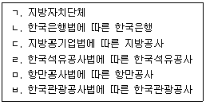
- ㄴ, ㅁ
- ㄱ, ㄹ, ㅂ
- ㄴ, ㄷ, ㅁ
- ㄱ, ㄹ, ㅁ, ㅂ
- ㄱ, ㄴ, ㄷ, ㄹ, ㅁ, ㅂ
(정답률: 41%)
29. 부동산 거래신고 등에 관한 법령상 신고포상금에 관한 설명으로 옳은 것은?
- 포상금의 지급에 드는 비용은 국고로 충당한다.
- 해당 위반행위에 관여한 자가 신고한 경우라고 신고포상금은 지급하여야 한다.
- 익명으로 고발하여 고발인을 확인할 수 없는 경우에는 당해 신고포상금은 국고로 환수한다.
- 부동산등의 거래가격을 신고하지 않은 자를 수사시관이 적발하기 전에 수사기관에 1건 고발한 경우 1천 5백만원의 신고포상금을 받을 수 있다.
- 신고관청 또는 허가관청으로부터 포상금 지급 결정을 통보받은 신고인은 포상금을 받으려면 국토교통부령으로 정하는 포상금 지급신청서를 작성하여 신고관청 또는 허가관청에 제출하여야 한다.
(정답률: 55%)
30. 부동산 거래신고 등에 관한 법령상 이행강제금에 대하여 개업공인중개사가 중개의뢰인에게 설명한 내용으로 옳은 것은?
- 군수는 최초의 의무이행위반이 있었던 날을 기준으로 1년에 한 번씩 그 이행명령이 이행될때까지 반복하여 이행강제금을 부과·징수할 수 있다.
- 시장은 토지의 이용 의무기간이 지난 후에도 이행명령위반에 대해서는 이행강제금을 반복하여 부과할 수 있다.
- 시장·군수 또는 구청장은 이행명령을 받은 자가 그 명령을 이행하는 경우라도 명령을 이행하기 전에 이미 부과된 이행강제금은 징수하여야 한다.
- 토지거래계약허가를 받아 토지를 취득한 자가 직접 이용하지 아니하고 임대한 경우에는 토지 취득가액의 100분의 20에 상당하는 금액을 이행강젝금으로 부과한다.
- 이행강제금 부과처분을 받은 자가 국토교통부장관에게 이의를 제기하려는 경우에는 부과처분을 고지받은 날부터 14일 이내에 하여야 한다.
(정답률: 30%)
31. X대지에 Y건물이 있고, X대지와 Y건물은 동일인의 소유이다. 개업공인중개사가 Y건물에 대해서만 매매를 중개하면서 중개의뢰인에게 설명한 내용으로 옳은 것을 모두 고른 것은? (다툼이 있으면 판례에 따름)
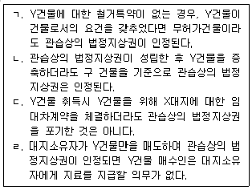
- ㄱ, ㄴ
- ㄴ, ㄷ
- ㄷ, ㄹ
- ㄱ, ㄴ, ㄹ
- ㄱ, ㄷ, ㄹ
(정답률: 36%)
32. 부동산 거래신고 등에 관한 법령상 부동산거래계약 신고 내용의 정정신청사항이 아닌 것은?
- 거래대상 건축물의 종류
- 개업공인중개사의 성명·주소
- 거래대상 부동산의 면적
- 거래 지분 비율
- 거래당사자의 전화번호
(정답률: 45%)
33. 법원은 X부동산에 대하여 담보권 실행을 위한 경매절차를 개시하는 결정을 내렸고, 최저매각가격을 1억원으로 정하였다. 기일입찰로 진행되는 이 경매에서 매수신청을 하고자 하는 중개의뢰인 甲에게 개업공인중개사가 설명한 내용으로 옳은 것은?
- 甲이 1억 2천만원에 매수신청을 하려는 경우, 법원에서 달리 정함이 없으면 1천 2백만원을 보증금액으로 제공하여야 한다.
- 최고가매수신고를 한 사람이 2명인 때에는 법원을 그 2명뿐만 아니라 모든 사람에게 다시 입찰하게 하여야 한다.
- 甲이 다른 사람과 동일한 금액으로 최고가매수신고를 하여 다시 입찰하는 경우 전의 입찰가격에 못미치는 가격으로 입찰하여 매수할 수 있다.
- 1억 5천만원의 최고가매수인이 있는 경우, 법원에서 보증금액을 달리 정하지 않았다면 甲이 차순위매수 신고를 하기 위해서는 신고액이 1억 4천원만원을 넘어야 한다.
- 甲이 차순위매수신고인인 경우 매각기일이 종결되면 즉시 매수신청의 보증을 돌려줄 것을 신청할 수 있다.
(정답률: 43%)
34. 개업공인중개사가 선순위 저당권이 설정되어 있는 서울시 소재 상가건물(상가건물 임대차보호법이 적용됨)에 대해 임대차기간 2018.10.1.부터 1년, 보증금 5천만원, 월차임 100만원으로 임대차를 중개하면서 임대인 甲과 임차인 乙에게 설명한 내용으로 옳은 것은?
- 乙의 연체차임액이 200만원에 이르는 경우 甲은 계약을 해지할 수 있다.
- 차임 또는 보증금의 감액이 있은 후 1년 이내에는 다시 감액을 하지 못한다.
- 甲이 2019.4.1.부터 2019.8.31. 사이에 乙에게 갱신거절 또는 조건 변경의 통지를 하지 않은 경우, 2019.10.1. 임대차계약이 해지된 것으로 본다.
- 상가건물에 대한 경매개시 결정등기 전에 乙 이 건물의 인도와 부가가치세법에 따른 사업자등록을 신청한 때에는, 보증금 5천만원을 선순위 저당권자보다 우선변제 받을 수 있다.
- 乙이 임대차의 등기 및 사업자등록을 마치지 못한 상태에서 2019.1.5. 甲이 상가건물을 丙에게 매도한 경우, 丙의 상가건물 인도청구에 대하여 乙은 대항할 수 없다.
(정답률: 40%)
35. 개업공인중개사가 묘소가 설치되어 있는 임야를 중개하면서 중개의뢰인에게 설명한 내용으로 틀린 것은? (다툼이 있으면 판례에 따름)
- 분표가 1995년에 설치되었다 하더라도 장사 등에 관한 법률이 2001년에 시행되었기 때문에 분모기지권을 시효취득할 수 없다.
- 암장되어 잇어 객관적으로 인식할 수 있는 외형을 갖추고 있지 않은 묘소에는 분묘기지권이 인정되지 않는다.
- 아직 사망하지 않은 사람을 위한 장래의 묘소인 경우 분묘기지권이 인정되지 않는다.
- 분묘기지권이 시효취득된 경우 특별한 사정이 없는 한 시효취득자는 자료를 지급할 필요가 없다.
- 분묘기지권의 효력이 미치는 지역의 범위 내라고 할지라도 기존의 분표 외에 새로운 분묘를 신설할 권능을 포함하지 않는다.
(정답률: 37%)
36. 甲은 乙과 乙 소유의 X부동산의 매매계약을 체결하고, 친구 丙과의 명의신탁약정에 따라 乙로부터 바로 丙명의로 소유권이전등기를 하였다. 이와 관련하여 개업공인중개사가 甲과 丙에게 설명한 내용으로 옳은 것을 모두 고른 것은? (다툼이 있으면 판례에 따름)
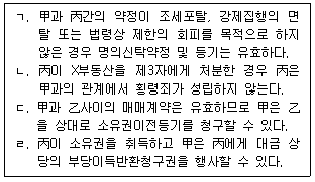
- ㄱ, ㄷ
- ㄱ, ㄹ
- ㄴ, ㄷ
- ㄱ, ㄴ, ㄹ
- ㄴ, ㄷ, ㄹ
(정답률: 32%)
37. 甲소유의 X주택에 대하여 임차인 乙이 주택의 인도를 받고 2019.6.3. 10:00에 확정일자를 받으면서 주민등록을 마쳤다. 그런데 甲의 채권자 丙이 같은 날 16:00에, 다른 채권자 丁은 다음날 16:00에 X주택에 대해 근저당권설정등기를 마쳤다. 임차인 乙에게 개업공인중개사가 설명한 내용으로 옳은 것은? (다툼이 있으면 판례에 따름)
- 丁이 근저당권을 실행하여 X주택이 경매로 매각된 경우, 乙은 매수인에 대하여 임차권으로 대항할수 있다.
- 丙 또는 丁누구든 근저당권을 실행하여 X주택이 경매로 매각된 경우, 매각으로 인하여 乙의 임차권은 소멸한다.
- 乙 은 X주택의 경매시 경매법원에 배당요구를 하면 丙 과 丁보다 우선하여 보증금 전액을 배당받을 수 있다.
- X주택이 경매로 매각된 후 乙이 우선변제권 행사로 보증그믈 반환받기 위해서는 X주택을 먼저 법원에 인도하여야 한다.
- X주택에 대해 乙이 집행권원을 얻어 강제경매를 신청하였더라고 우선변제권을 인정받기 위해서는 배당요구의 종기까지 별도로 배당요구를 하여야 한다.
(정답률: 29%)
38. 부동산 전자계약에 관한 설명으로 옳은 것은?
- 시·도지사는 부동산거래의 계약·신고·허가·관리 등의 업무와 관련된 정보체계를 구축·운영하여야 한다.
- 부동산 거래계약의 신고를 하는 경우 전자인증의 방법으로 신부늘 증명할 수 없다.
- 정보처리시스템을 이용하여 주택임대차계약을 체결하였더라고 해당 주택의 임차인은 정보처리시스템을 통하여 전자계약증서에 확정일자 부여를 신청할 수 없다.
- 개업공인중개사가 부동산거래계약시스템을 통하여 부동산거래계약을 체결한 경우 부동산거래계약이 체결된 때에 부동산거래계약 신고서를 체출한 것으로 본다.
- 거래계약서 작성 시 확인·설명사항이 전자문서 및 전자거래 기본법에 따른 공인전자문서센터에 보관된 경우라도 개업공인중개사는 확인·설명사항을 서면으로 작성하여 보존하여야 한다.
(정답률: 46%)
39. 부동산 거래신고 등에 관한 법령상 부동산 거래신고의 대상이 되는 계약이 아닌 것은?
- 주택법에 따라 공급된 주택의 매매계약
- 택지개발촉진법에 따라 공급된 토지의 임대차계약
- 도시개발법에 따른 부동산에 대한 공급계약
- 체육시설의 설치·이용에 관한 법률에 따라 등록된 시설이 있는 건물의 매매계약
- 도시 및 주거환경정비법에 따른 관리처분계약의 인가로 취득한 입주자로 선정된 지위의 매매계약
(정답률: 38%)
40. 부동산 거래신고 등에 관한 법령상 부동산 거래신고에 관한 설명으로 옳은 것은? (다툼이 있으면 판례에 따름)
- 개업공인중개사가 거래계약서를 작성·교부한 경우 거래당사자는 60일 이내애 부동산거래신고를 하여야 한다.
- 소속공인중개사 및 중개보조원은 부동산거래신고를 할 수 있다.
- 지방공기업법에 따른 지방공사와 개인이 매매계약을 체결한 경우 양 당사자는 공동으로 신고하여야 한다.
- 거래대상 부동산의 공법상 거래규제 및 이용제한에 관한 사항은 부동산거래계약 신고서의 기재사항이다.
- 매매대상 토지 중 공중부지로 편입되지 아니할 부분의 토지를 매도인에게 원가로 반환한다는 조건을 당사자가 약정한 경우 그 사항은 신고사항이다.
(정답률: 35%)
2과목: 임의구분
41. 국토의 계획 및 이용에 관한 법령상 광역시의 기반 시설부담구역에 관한 설명으로 틀린 것은?
- 기반시설부담구역이 지정되면 광역시장은 대통령려으로 정하는 바에 따라 기반시설설치계획을 수립하여야 하며, 이를 도시·군관리계획에 반영하여야 한다.
- 기반시설부담구역의 지정은 해당 광역시에 설치된 지방도시계획위원회의 심의 대상이다.
- 광역시장은 [국토의 계획 및 이용에 관한 법률]의 개정으로 인하여 행위 제한이 완화되는 지역에 대하여는 이를 기반시설부담구역으로 지정할수 없다.
- 지구단위계획을 수립한 경우에는 기반시설계획을 수립한 것으로 본다.
- 기반시설부담구역의 지정고시일부터 1년이 되는 날까지 광역시장이 기반시설설치계획을 수렴하지 아니하면 그 1년이 되는 날의 다음날에 기반시설부담구역의 지정은 해제된 것으로 본다.
(정답률: 35%)
42. 국토의 계획 및 이용에 관한 법령상 주민이 도시·군관리계획의 입안을 제안하는 제안하는 경우에 관한 설명으로 틀린 것은?
- 도시·군관리계획의 입안을 제안받은 자는 제안자와 협의하여 제안된 도시·군관리계획의 입안 및 결정에 필요한 비용의 전부 또는 일부를 제안자에게 부담시킬 수 있다.
- 제안서에는 도시·군관리계획도서뿐만 아니라 계획설명서도 첨부하여야 한다.
- 도시·군관리계획의 입안을 제안받은 자는 그 처리 결과를 제안자에게 알려야 한다.
- 산업·유통개발진흥지구의 지정 및 변경에 관한 사항은 입안제안의 대상에 해당하지 않는다.
- 도시·군관리계획의 입안을 제안하려는 자가 토지소유자의 동의를 받아야 하는 경우 국·공유지는 동의 대상 토지 면적에서 제외된다.
(정답률: 41%)
43. 국토의 계획 및 이용에 관한 법령상 개발행위허가에 관한 설명으로 옳은 것은? (다툼이 있으면 판례에 따름)
- 재해복구를 위한 응급조치로서 공작물의 설치를 하려는 자는 도시·군계획사업에 의한 행위가 아닌 한 개발행위허가를 받아야 한다.
- 국가나 지방자치단체가 시행하는 개발행위에도 이행보증금을 예치하게 하여야 한다.
- 환경오염 방지조치를 할 것을 조건으로 개발행위허가를 하려는 경우에는 미리 개발행위허가를 신청한 자의 의견을 들어야 한다.
- 개발행위허가를 받은 자가 행정청인 경우, 그가 기존의 공공시설에 대체되는 공공시설을 설치하면 기존의 공공시설은 대체되는 공공시설의 설치비용에 상당하는 범위안에서 개발행위허가를 받은 자에게 무상으로 양도될수 있다.
- 개발행위허가를 받은 자가 행정청이 아닌 경우, 개발행위로 용도가 폐지되는 공공시설은 개발행위허가를 받은 자에게 전부 무상으로 귀속된다.
(정답률: 40%)
44. 국토의 계획 및 이용에 관한 법령상 아래 내용을 뜻하는 용어는?
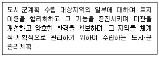
- 일부관리계획
- 지구단위계획
- 도시·군기본계획
- 시가화조정구역계획
- 입지규제최소구역계획
(정답률: 43%)
45. 국토의 계획 및 이용에 관한 법률상 시장 또는 군수가 주민의 의견을 들어야 하는 경우로 명시되어 있지 않은 것은? (단, 국토교통부장관이 따로 정하는 경우는 고려하지 않음)
- 광역도시계획을 수립하려는 경우
- 성장관리방안을 수립하려는 경우
- 시범도시사업계획을 수립하려는 경우
- 기반시설부담구역을 지정하려는 경우
- 개발밀도관리구역을 지정하려는 경우
(정답률: 38%)
46. 국토의 계획 및 이용에 관한 법령상 국가 또는 지방자치단테가 자연취락지구안의 주민의 생활편익과 복지증진 등을 위하여 시행하거나 지원할 수 있는 사업만을 모두 고른 것은?
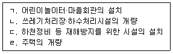
- ㄱ, ㄴ, ㄷ
- ㄱ, ㄴ, ㄹ
- ㄱ, ㄷ, ㄹ
- ㄴ, ㄷ, ㄹ
- ㄱ, ㄴ, ㄷ, ㄹ
(정답률: 41%)
47. 국토의 계획 및 이용에 관한 법령상 용도지역별 용적률의 최대한도가 다음 중 가장 큰 것은? (단, 조례등 기타 강화·완화조건은 고려하지 않음.)
- 제1종전용주거지역
- 제3종일반주거지역
- 준주거지역
- 일반공업지역
- 준공업지역
(정답률: 44%)
48. 국토의 계획 및 이용에 관한 법령상 도시·군계획시설에 관한 설명이다. ( )안에 들어갈 내용을 바르게 나열한 것은?
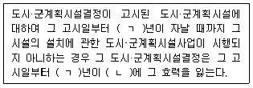
- ㄱ: 10, ㄴ: 되는 날
- ㄱ: 20, ㄴ: 되는 날
- ㄱ: 10, ㄴ: 되는 날의 다음날
- ㄱ: 15, ㄴ: 되는 날의 다음날
- ㄱ: 20, ㄴ: 되는 날의 다음날
(정답률: 41%)
49. 국토의 계획 및 이용에 관한 법령상 제3종일반주거지역 안에서 도시·군계획조례가 정하는 바에 의하여 건축할 수 있는 건축물은? (단, 건축물의 종류는 [건축법 시행령] 별표 1에 규정된 용도별 건축물의 종류에 따름)
- 제2종 근린생활시설 중 단란주점
- 의료시설 중 격리시설
- 문화 및 집회시설 중 관람장
- 위험물저장 및 처리시설 중 액화가스 취급소·판매소
- 업무시설로서 그 용도에 쓰이는 바닥면적의 합계가 4천제곱미터인 것
(정답률: 31%)
50. 국토의 계획 및 이용에 관한 법령상 용도지구와 그 세분(細分)이 바르게 연결된 것만을 모두 고른 것은? (단, 조례는 고려하지 않음)
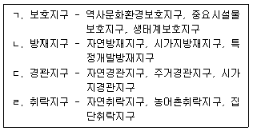
- ㄱ
- ㄹ
- ㄱ, ㄷ
- ㄴ, ㄹ
- ㄷ, ㄹ
(정답률: 41%)
51. 국토의 계획 및 이용에 관한 법령사 건축물별 기반 시설유발계수가 다음중 가장 큰 것은?
- 단독주택
- 장례시설
- 관광휴게시설
- 제2종 근린생활시설
- 비금속 광물제품 제조공장
(정답률: 38%)
52. 「국토의 계획 및 이용에 관한 법률」상 용어의 정의에 관한 조문의 일부이다. ( )안에 들어갈 내용을 바르게 나열한 것은?
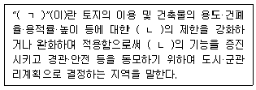
- ㄱ: 용도지구, ㄴ: 영도지역
- ㄱ: 용도지구, ㄴ: 용도구역
- ㄱ: 용도지역 ㄴ: 영도지구
- ㄱ: 용도지구, ㄴ: 영도지역 및 용도구역
- ㄱ: 용도지역, ㄴ: 영도구역 및 용도지구
(정답률: 36%)
53. 도시개발법령상 도시개발구역의 지정에 관한 설명으로 옳은 것은? (단, 특례는 고려하지 않음)
- 대도시 시장은 직접 도시개발구역을 지정할 수 없고, 도지사에게 그 지정을 요청하여야 한다.
- 도시개발사업이 필요하다고 인정되는 지역이 둘 이상의 도의 행정구역에 걸치는 경우에는 해당 면적이 더 넓은 행정구역의 도지사가 도시개발구역을 지정하여야 한다.
- 천재지변으로 인하여 도시개발사업을 긴급하게 할 필요가 있는 경우 국토교통부장관이 도시개발구역을 지정할 수 있다.
- 도시개발구역의 총 면적이 1만제곱미터 미만인 경우 둘 이상의 사업시행지구로 분할하여 지정할 수 있다.
- 자연녹지지역에서 도시개발구역을 지정한 이후 도시개발사업의 계획을 수립하는 것은 허용하지 아니한다.
(정답률: 41%)
54. 도시개발법령상 지정권자가 ‘도시개발구역 전부를 환지 방식으롤 시행하는 도시개발사업’을 ‘지방자치단체의 장이 집행하는 공공시설에 관한 사업’과 병행하여 시행할 필요가 있다고 인정하는 경우. 이 도시개발사업의 시행자로 지정될 수 없는 자는? (단, 지정될 수 있는 자가 도시개발구역의 토지 소유자는 아니며, 다른 법령은 고려하지 않음)
- 국가
- 지방자치단체
- 「지방공기업법」에 따른 지방공사
- 「한국토지주택공사법」에 따는 한국토지주택공사
- 「자본시장과 금융투자업에 관한 법률」에 따른 신탁업자 중 「주식회사 등의 외부감사에 관한 법률」제4조에 따른 외부감사와 대상이 되는 자
(정답률: 29%)
55. 도시개발법령상 환지 방식에 의한 도시개발사업의 시행에 관한 설명으로 옳은 것은?
- 시행자는 준공검사를 받은 후 60일 이내에 지정권자에게 환지처분을 신청하여야 한다.
- 도시개발구역이 2이상의 환지계획구역으로 구분되는 경우에도 사업비와 보류지는 도시개발구역 전체를 대상으로 책정하여야 하며, 환지계획구역별로 책정할 수 없다.
- 도시개발구역에 있는 조성토지등의 가격은 개별공시지가로 한다.
- 환지 예정지가 지정되어도 종전 토지의 임차권자는 환지처분 공고일까지 종전 토지를 사용·수익할 수 있다.
- 환지 계획에는 필지별로 된 환지 명세와 필지별로 권리별로 된 청산 대상 토지 명세가 포함되어야 한다.
(정답률: 25%)
56. 도시개발법령상 도시개발사업의 시행자인 국가 꼬는 지방자치단체가 「주택법」에 따른 주택건설사업자에게 대행하게 할 수 있는 도시개발사업의 범위에 해당하는 것만을 모두 고른 것은?
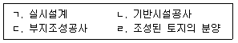
- ㄱ, ㄴ, ㄷ
- ㄱ, ㄴ, ㄹ
- ㄱ, ㄷ, ㄹ
- ㄴ, ㄷ, ㄹ
- ㄱ, ㄴ, ㄷ, ㄹ
(정답률: 32%)
57. 도시개발법령상 도시개발사업의 시행방식에 관한 설명으로 옳은 것은?
- 분할 혼영방식은 수용 또는 사용 방식이 적용되는 지역과 환지 방식이 적용되는 지역을 사업시행지구별로 분할하여 시행하는 방식이다.
- 계획적이고 체계적인 도시개발 등 집단적인 조성과 공급이 필요한 경우에는 환지 방식으로 정하여야 하며, 다른 시행방식에 의할 수 없다.
- 도시개발구역지정 이후에는 도시개발사업의 시행방식을 변경할 수 없다.
- 시행자는 도시개발사업의 시행방식을 토지등을 수용 또는 사용하는 방식, 환지 방식 또는 이를 혼용하는 방식중에서 정하여 국토교통부장관의 허가를 받아야 한다.
- 지방자치단체가 도시개발사업의 전부를 환지 방식으로 시행하려고 할 때에는 도시개발사업에 관한 규약을 정하여야 한다.
(정답률: 25%)
58. 도시개발법령상 수용 또는 사용의 방식에 따른 사업시행에 관한 설명으로 옳은 것은?
- 「지방공기업법」에 따라 설립된 지방공사가 시행자인 경우 토지 소유자 전원의 동의 없이는 도시개발사업에 필요한 토지 등을 수용하거나 사용할 수 없다.
- 지방자치단체가 시행자인 경우 지급보증 없이 토지상환 채권을 발행할 수 있다.
- 지정권자가 아닌 시행자는 조성토지등을 공급받거나 이용하려는 자로부터 지정권자의 승인 없이 해당 대금의 전부 또는 일부를 미리 받을 수 있다.
- 원형지의 면적은 도시개발구역 전체 토지 면적의 3분의 1을 초과하여 공급될수 있다.
- 공공용지가 아닌 조성 토지등의 공급은 수의계약의 방법에 의하여야 한다.
(정답률: 31%)
59. 도시 및 주거환경정비법령상 정비사업의 시행에 관한 설명으로 옳은 것은?
- 조합의 정관에는 정비구역의 위치 및 면적이 포함되어야 한다.
- 조합설립인가 후 시장·군수 등이 토지주택공사등을 사업시행자로 지정·고시한 때에는 그 고시일에 조합설립인가가 취소된 것으로 본다.
- 조합은 명칭에 “정비사업조합”이라는 문자를 사용하지 않아도 된다.
- 조합장이 자기를 위하여 조합과 소송을 할 때에는 이사가 조합을 대표한다.
- 재건축사업을 하는 정비구역에서 오피스텔을 건설하여 공급하는 경우에는 「국토의 계획 및 이용에 관한 법률」에 따른 준거주지역 및 상업지역 이외의 지역에서 오피스텔를 건설할 수 있다.
(정답률: 21%)
60. 도시 및 주거환경정비법령상 비용의 부담 등에 관한 설명으로 틀린 것은?
- 정비사업비는 「도시 및 주거환경정비법」 또는 다른 법령에 특별한 규정이 있는 경우를 제외하고는 사업시행자가 부담한다.
- 지방자치단체는 시장·군수 등이 아닌 사업시행자가 시행하는 정비사업에 드는 비용에 대해 용지를 알선할 수는 있으나 직접적으로 보조할 수는 없다.
- 정비구역의 국유·공유재산은 사업시행자 또는 점유자 및 사용자에게 다른 사람에 우선하여 수의계약으로 매각될 수 있다.
- 시장·군수등이 아닌 사업시행자는 부과금 또는 연체료를 체납하는 자가 있는 때에는 시장·군수등에게 그 부과·징수를 위탁할 수 있다.
- 사업시행자는 정비사업을 시행하는 지역에 전기·가스 등의 공급시설을 설치하기 위하여 공동구를 설치하는 경우에는 다른 법령에 따라 그 동공구에 수용될 시설을 설치할 의무가 있는 자에게 공동구의 설치에 드는 비용을 부담시킬 수 있다.
(정답률: 27%)
61. 도시 및 주거환경정비법령상 분양공고에 포함되어야 할 사항으로 명시되지 않은 것은? (단, 토지등소유자 1인이 시행하는 재개발사업은 제외하고, 조례는 고려하지 않음)
- 분양신청자격
- 분양신청방법
- 분양신청기간 및 장소
- 분양대상자별 분담금의 추산액
- 분양대상 대지 또는 건축물의 내역
(정답률: 36%)
62. 도시 및 주거환경정비법령상 도시·주거환경정비기본계획을 변경할 때 지방의회의 의견청취를 생략할 수 있는 경우가 아닌 것은?
- 공동이용시설에 대한 설치계획을 변경하는 경우
- 정비사업의 계획기간을 단축하는 경우
- 사회복지시설 및 주민문화시설 등에 대한 설치계획을 변경하는 경우
- 구체적으로 명시된 정비예정구역 면적의 25퍼센트를 변경하는 경우
- 정비사업의 시행을 위하여 필요한 재원도달에 관한 사항을 변경하는 경우
(정답률: 34%)
63. 도시 및 주거환경정비법령상 조합총회의 소집에 관한 규정내용이다. ( )안에 들어갈 숫자를 바르게 나열한 것은?
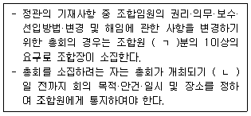
- ㄱ: 3, ㄴ: 7
- ㄱ: 5, ㄴ: 7
- ㄱ: 5, ㄴ: 10
- ㄱ: 10, ㄴ: 7
- ㄱ: 10, ㄴ: 10
(정답률: 24%)
64. 도시 및 주거환경정비법령상 도시·주거환경정비기본계획의 수립 및 정비구역의 지정에 관한 설명으로 틀린 것은?
- 기본계획의 수립권자는 기본계획을 수립하려는 경우에는 14일 이상 주민에게 공람하여 의견을 들어야 한다.
- 기본계획의 수립권자는 기본계획을 수립한 때에는 지체없이 이를 해당 지방자치단체의 공보에 고시하고 일반인이 열람할 수 있도록 하여야 한다.
- 정비구역의 저정권자는 정비구역의 진입로 설치를 위하여 필요한 경우에는 진입로 지역과 그 인접지역을 포함하여 정비구역을 지정할 수 있다.
- 정비구역에서는 「주택법」에 따른 지역주택조합의 조합원을 모집해서는 아니 된다.
- 정비구역에서 이동이 쉽지 아니한 물건을 14일 동안 쌓아두기 위해서는 시장·군수등의 허가를 받아야 한다.
(정답률: 29%)
65. 주택법령상 용어에 관한 설명으로 옳은 것은?
- “주택단지”에 해당하는 토지가 폭 8미터 이상인 도시계획예정도로로 분리된 경우, 분리된 토지물 각각 별개의 주택단지로 본다.
- “단독주택”에는 「건축법 시행령」에 따른 다가구주택이 포함되지 않는다.
- “공동주택”에는 「건축법 시행령」에 따른 아파트, 연립주택, 기숙사 등이 포함된다.
- “주택”이란 세대의 구성원이 장기간 독립된 주거생화를 할 수 있는 구조로 된 건축물의 전부 또는 일부를 말하며, 그 부속토지는 제외한다.
- 주택단지에 딸린 어린이놀이터, 근린생활시설, 유치원, 주민운동시설, 지역난방공급시설 등은 “부대시설”에 포함된다.
(정답률: 32%)
66. 주택법령상 지역주택조합의 설립인가신청을 위하여 제출하여야 하는 서류에 해당하지 않는 것은?
- 조합장선출동의서
- 조합원의 동의를 받은 정산서
- 조합원 전원이 자필로 연명한 조합규약
- 조합원 자격이 있는 자임을 확인하는 서류
- 해당 주택건설대지의 80퍼센트 이상에 해당하는 토지의 사용권원을 확보하였음을 증명하는 서류
(정답률: 30%)
67. 주택법령상 주거정책심의위원회의 심의를 거치도록 규정되어 있는 것만을 모두 고른 것은?
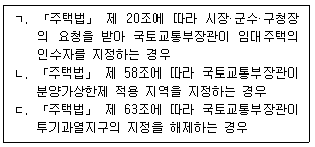
- ㄴ
- ㄱ, ㄴ
- ㄱ, ㄷ
- ㄴ, ㄷ
- ㄱ, ㄴ, ㄷ
(정답률: 21%)
68. 주택법령상 주택건설사업계획승인에 관한 설명으로 틀린 것은?
- 사업계획에는 부대시설 및 복리시설의 설치에 관한 계획 등이 포함되어야 한다.
- 주택단지의 전체 세대수가 500세대인 주택건설사업을 시행하려는 자는 주택단지를 공구별로 분할하여 주택을 건설·공급할 수 있다.
- 「한국토지주택공사법」에 따른 한국토지주택공사는 동일한 규모의 주택을 대량으로 건설하려는 경우에는 국토교통부장관에게 주택의 형별(刑罰)로 표본설계도서를 작성·제출하여 승인을 받을 수 있다.
- 사업계획승인권자는 사업계획을 승인할 때 사업주체가 제출하는 사업계획에 해당 주택건설사업과 직접적으로 관련이 없거나 과도한 기반시설의 기부체납을 요구하여서는 아니 된다.
- 사업계획승인권자는 사업계획승인의 신청을 받았을 때에는 정당한 사유가 없으면 신청받은 날부터 60일 이내에 사업주체에게 승인 여부를 통보하여야 한다.
(정답률: 30%)
69. 「주택법」상 사용검사 후 매도청구 등에 관한 조문의 일부이다. ( )에 들어갈 숫자를 바르게 나열한 것은?
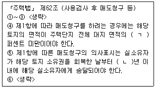
- ㄱ: 5, ㄴ: 1
- ㄱ: 5, ㄴ: 2
- ㄱ: 5, ㄴ: 3
- ㄱ: 10, ㄴ: 1
- ㄱ: 10, ㄴ: 2
(정답률: 23%)
70. 「주택법」상 청문을 하여야 하는 처분이 아닌 것은? (단, 다른 법령에 따른 청문은 고려하지 않음.)
- 공업화주택의 인정취소
- 주택조합의 설림인가취소
- 주택건설 사업계획승인의 취소
- 공동주택 리모델링허가의 취소
- 주택건설사업의 등록말소
(정답률: 20%)
71. 주택법령상 사업계획승인권자가 사업주체의 신청을 받아 공사의 착수기간을 연장할 수 있는 경우가 아닌 것은? (단, 공사에 착수하지 못할 다른 부득이한 사유는 고려하지 않음.)
- 사업계획승인의 조건으로 부과된 사항을 이행함에 따라 공사 착수가 지연되는 경우
- 공공택지의 개발·조성을 위한 계획에 포함된 기반시설의 설치 지연으로 공사 착수가 지연되는 경우
- 「매장문화재 보호 및 조사에 관한 법률」에 따라 문화재청장의 매장문화재 발굴허가를 받은 경우
- 해당 사업시행지에 대한 소유권 분쟁을 사업주체가 소송 외의 방법으로 해결하는 과정에서 공사 착수가 지연되는 경우
- 사업주체에게 책임이 없는 불가항력적인 사유로 인하여 공사 착수가 지연되는 경우
(정답률: 23%)
72. 건축법령상 건축허가 대상 건축물을 건축하려는 자가 허가권자의 사전결정통지를 받은 경우 그 허가를 받은 것으로 볼 수 있는 것만을 모두 고른 것은?
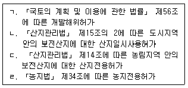
- ㄱ, ㄴ
- ㄱ, ㄴ, ㄹ
- ㄱ, ㄷ, ㄹ
- ㄴ, ㄷ, ㄹ
- ㄱ, ㄴ, ㄷ, ㄹ
(정답률: 22%)
73. 건축법령상 건축민월전문위원회에 관한 설명으로 틀린 것은? (단, 조례는 고려하지 않음)
- 도지사는 건축위원회의 심의 등을 효율적으로 수행하기 위하여 필요하면 자신이 설치하는 건축위원회에 건축민원전문위원회를 두어 운영할 수 있다.
- 건축민원전문위원회가 위원회에 출석하게 하여 의견을 들을 수 있는 자는 신청인과 허가권자에 한한다.
- 건축민원전문위원회에 질의민원의 심의를 신청하려는 자는 문서에 의할 수 없는 특별한 사정이 있는 경우에는 구술로도 신청할 수 있다.
- 건축민원전문위원회는 심의에 필요하다고 인정하면 위원 또는 사무국의 소속 공무원에게 관계 서류를 열람하게 하거나 관계 사업장에 출입하여 조사하게 할 수 있다.
- 건출민원전문위원회는 건축법령의 운영 및 집행에 관한 민원을 심의할 수 있다.
(정답률: 24%)
74. 건축법령상 건축공사현장 안전관리 예치금에 관한 조문의 내용이다. ( )에 들어갈 내용을 바르게 나열한 것은? (단, 적용 제외는 고려하지 않음)
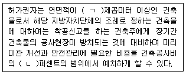
- ㄱ: 1천, ㄴ: 1
- ㄱ: 1천, ㄴ: 3
- ㄱ: 1천, ㄴ: 5
- ㄱ: 3천, ㄴ: 3
- ㄱ: 3천, ㄴ: 5
(정답률: 27%)
75. 건축법령상 국가가 소유한 대지의 지상 여유공간에 구분지상권을 설정하여 시설을 설치하려는 경우, 허가권자가 구분지상권자를 건축주로 보고 구분지상권이 설정된 부분을 대지로 보아 건축허가를 할 수 있는 시설에 해당하는 것은?
- 수련시설 중 「청소년활동진흥법」에 따른 유스호스텔
- 제2종 근린생활시설 중 다중생활시설
- 제2종 근린생활시설 중 노래연습장
- 문화 및 집회시설 중 공연장
- 업무시설 중 오피스텔
(정답률: 27%)
76. 건축법령사 철도의 선로 부지(敷地)에 있는 시설로서 「건축법」의 적용을 받지 않는 건축물만을 모두 고른 것은? (단, 건축법령 이외의 특례는 고려하지 않음)
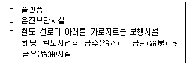
- ㄱ, ㄴ, ㄷ
- ㄱ, ㄴ, ㄹ
- ㄱ, ㄷ, ㄹ
- ㄴ, ㄷ, ㄹ
- ㄱ, ㄴ, ㄷ, ㄹ
(정답률: 32%)
77. 건축법령상 대지를 조성하기 위하여 건축물과 분리하여 공작물을 축조하려는 경우, 특별자치시장·특별자치도지사 또는 시장·군수·구청장에게 신고하여야 하는 공작물에 해당하지 않는 것은? (단, 공용건축물에 대한 특례는 고려하지 않음)
- 상업지역에 설치하는 높이 8미터의 통신용 철탑
- 높이 4미터의 응벽
- 높이 8미터의 굴뚝
- 바닥면적 40제곱미터의 지하대피호
- 높이 4미터의 장식탑
(정답률: 29%)
78. 건축법령상 결합건축을 하고자 하는 건축주가 건축허가를 신청할 때 절합건축협정서에 명시하여야 하는 사항이 아닌 것은?
- 절합건축 대상 대지의 용도지역
- 절합건축협정서를 체결하는 자가 자연인인 경우 성명, 주소 및 생년월일
- 절합건축협정서를 체결하는 자가 법인인 경우 지방세 납세증명서
- 절합건축 대상 대지별 건축계획서
- 「국토의 계획 및 이용에 관한 법률」제78조에 따라 조례로 정한 용적률과 절합건축으로 조정되어 적용되는 대지별 용적률
(정답률: 27%)
79. 농지법령상 농지에 해당하는 것만을 모두 고른 것은?
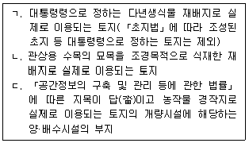
- ㄱ
- ㄱ, ㄴ
- ㄱ, ㄷ
- ㄴ, ㄷ
- ㄱ, ㄴ, ㄷ
(정답률: 25%)
80. 농지법령상 농지의 소유자가 소유 농지를 위탁경영 할 수 없는 경우만을 모두 고른 것은?
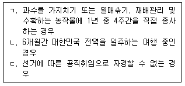
- ㄱ
- ㄴ
- ㄱ, ㄴ
- ㄴ, ㄷ
- ㄱ, ㄴ, ㄷ
(정답률: 22%)
3과목: 임의구분
81. 공간정보의 구축 및 관리 등에 관한 법령상 물이 고이거나 상식적으로 물을 저장하고 있는 저수지·호수 등의 토지와 연·왕골 등이 자생하는 배수가 잘 되지 아니하는 토지의 지목 구분은?
- 유지(溜池)
- 양어장
- 구거
- 답
- 유원지
(정답률: 35%)
82. 공간정보의 구축 및 관리 등에 관한 법령상 지적측량 적부심사에 대한 재심사와 지적분야 측량기술자의 양성에 관한 사항을 심의·의결하기 위하여 설치한 위원회는?
- 축척변경위원회
- 중앙지적위원회
- 토지수용위원회
- 경계결정위원회
- 지방지적위원회
(정답률: 39%)
83. 공간정보의 구축 및 관리 등에 관한 법령상 지적소관청이 토지의 이동에 따라 지상경계를 새로 정한 경우에 경계점 위치 설명도와 경계점 표지의 종류 등을 등록하여 관리하는 장부는?
- 토지이동조사부
- 부동산종합공부
- 경계점좌표등록부
- 지상경계점등록부
- 토지이용정리결의서
(정답률: 35%)
84. 공간정보의 구축 및 관리 등에 관한 법령상 지적공부에 등록된 토지가 지형의 변화 등으로 바다로 된 토지의 등록말소 및 회복 등에 관한 설명으로 틀린 것은?
- 지적소관청은 지적공부에 등록된 토지가 지형의 변화등으로 바다로 된 경우로서 원상(原狀)으로 회복될 수 없는 경우에는 지적공부에 등록된 토지소유자에게 지적공부의 등록말소 신청을 하도록 통지하여야 한다.
- 지적소관청은 바다로 된 토지의 등록말소 신청에 의하여 토지의 표시 변경에 관한 등기를 할 필요가 있는 경우에는 지체 없이 관할 등기관서에 그 등기를 촉탁하여야 한다.
- 지적소관청이 직권으로 지적공부의 등록사항을 말소한 후 지형의 변화 등으로 다시 토지가 된 경우에 토지로 회복등록을 하려면 그 지적측량성과 및 등록말소 당시의 지적공부 등 관계 자료에 따라야 한다.
- 지적소관청으로부터 지적공부의 등록말소 신청을 하도록 통지를 받은 토지소유자가 통지를 받은 날부터 60일 이내에 등록말소 신청을 하지 아니하면, 지적소관청은 직권으로 그 지적공부의 등록사항을 말소하야야 한다.
- 지적소관청이 직권으로 지적공부의 등록사항을 말소하거나 회복등록하였을 때에는 그 정리 결과를 토지소유자 및 해당 공유수면의 관리청에 통지하여야 한다.
(정답률: 30%)
85. 공간정보의 구축 및 관리 등에 관한 법령상 축척변경위원회의 구성과 회의 등에 관한 설명으로 옳은 것을 모두 고른 것은?
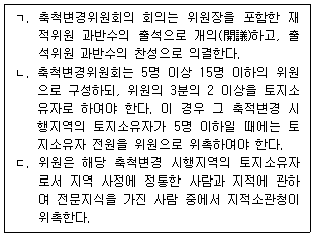
- ㄱ
- ㄴ
- ㄱ, ㄷ
- ㄴ, ㄷ
- ㄱ, ㄴ, ㄷ
(정답률: 30%)
86. 공간정보의 구축 및 관리 등에 관한 법령상 지적공부의 열람 및 등본 발금, 부동산종합공부의 등록사항 및 열람·증명서 발급 등에 관한 설명으로 틀린 것은?
- 정보처리시스템을 통하여 기록·저장된 지적공부(지적도 및 임야도는 제외한다)를 열람하거나 그 등본을 발급받으려는 경우에는 시·도지사, 시장·군수 또는 구청장이나 읍·면·동의 장에게 신청할 수 있다.
- 지적소관청은 부동산종합공부에 「공간정보의 구축 및 관리 등에 관한 법률」에 따른 지적공부의 내용에서 토지의 표시화 소유자에 관한 사항을 등록하여여 한다.
- 부동산종합공부를 열람하거나 부동산종합공부 기록사항에 관한 증명서를 발급받으려는 자는 지적공부·부동산종합공부 열람·발급 신청서(전자문서로 된 신청서를 포함한다)를 지적소관청 또는 읍·면·동장에게 제출하여야 한다.
- 지적소관청은 부동산종합공부에 「토지이용규제 기본법」 제10조에 따른 토지이용계획확인서의 내용에서 토지의 이용 및 규제에 관한 사항을 등록하여야 한다.
- 지적소관청은 부동산종합공부에 「건축법」제38조에 따른 건축물대장의 내용에서 건축물의 표시와 소유자에 관한 사항(토지에 건축물이 있는 경우만 해당한다)을 등록하여야 한다.
(정답률: 26%)
87. 공간정보의 구축 및 관리 등에 관한 법령상 지적소관청이 지적공부의 등록사항에 잘못이 있는지를 직권으로 조사·측량하여 정정할 수 있는 경우를 모두 고른 것은?
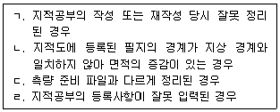
- ㄷ
- ㄹ
- ㄱ, ㄹ
- ㄴ, ㄷ
- ㄱ, ㄷ, ㄹ
(정답률: 30%)
88. 공간정보의 구축 및 관리 등에 관한 법령사 지적도의 축척이 600분의 1인 지역에서 신규등록할 1필지의 면적을 계산한 값이 0.⑤0m2이었다. 토지대장에 등록하는 면적의 결정으로 옳은 것은?
- 0.01m2
- 0.⑤m2
- 0.1m2
- 0.5m2
- 1.0m2
(정답률: 36%)
89. 공간정보의 구축 및 관리 등에 관한 법령상 도시개발사업 등 시행지역의 토지이동 신청에 관한 특례의 설명으로 틀린 것은?
- 「도시개발법」에 따른 도시개발사업의 착수물 지적소관청에 신고하려는 자는 도시개발사업 등의 착수(시행)·변경·완료 신고서에 사업인가서, 지번별 조서, 사업계획도를 첨부하여야 한다.
- 「농어촌정비법」에 따른 농어촌정비사업의 사업시행자가 지적소관청에 토지의 이동을 신청한 경우 토지의 이동은 토지의 형질변경 등의 공사가 착수(시행)된 때에 이루어진 것으로 본다.
- 「도시 및 주거환경정비법」에 따른 정비사업의 착수·변경 또는 완료 사실의 신고는 그 사유가 발생한 날부터 15일 이내에 하여야 한다.
- 「주택법」에 따른 주택건설사업의 시행자가 파산 등의 이유로 이동 신청을 할 수 없을 때에는 그 주택의 시공을 보증한 자 또는 입주예정자 등이 신청할 수 있다.
- 「택지개발촉진법」에 따른 택지개발사업의 사업시행자가 지적소관청에 토지의 이동을 신청한 경우 신청 대상 지역이 환지(換地)를 수반하는 경우에는 지적소관청에 신고한 사업완료 신고로써 이를 갈음할 수 있다. 이 경우 사업완료신고서에 택지개발 사업시행자가 토지의 이동 신청을 갈음한다는 뜻을 적어야 한다.
(정답률: 30%)
90. 공간정보의 구축 및 관리 등에 관한 법령상 지적측량을 실시하여야 하는 경우를 모두 고른 것은?
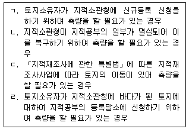
- ㄱ, ㄴ, ㄷ
- ㄱ, ㄴ, ㄹ
- ㄱ, ㄷ, ㄹ
- ㄴ, ㄷ, ㄹ
- ㄱ, ㄴ, ㄷ, ㄹ
(정답률: 26%)
91. 공간정보의 구축 및 관리 등에 관한 법령상 지목을 지적도에 등록하는 때에 표기하는 부호로서 옳은 것은?
- 광천지-천
- 공장용지 - 공
- 유원지 - 유
- 제방 - 제
- 도로 - 로
(정답률: 34%)
92. 공간정보의 구축 및 관리 등에 관한 법령상 토지의 합병 및 지적공부의 정리 등에 관한 설명으로 틀린 것은?
- 합병에 따른 면적은 따로 지적측량을 하지 않고 합병전 각 필지의 면적을 합산하여 합병 후 필지의 면적으로 결정한다.
- 토지소유자가 합병 전의 필지에 주거·사무실 등의 건축물이 있어서 그 건축물이 위치한 지번을 합병 후이 지번으로 신청할 때에는 그 지번을 합병 후의 지번으로 부여하여야 한다.
- 합병에 따른 경계는 따로 지적측량을 하지 않고 합병전 각 필지의 경계 중 합병으로 필요 없게 된 부분을 말소하여 합병 후 필지의 경계로 결정한다.
- 지적소관청은 토지소유자의 합병신청에 의하여 토지의 이동이 있는 경우에는 지적공부를 정리하여야 하며, 이 경우에는 토지이동정리 결의서를 작성하여야 한다.
- 토지소유자는 도로, 제방, 하천, 구거, 유지의 토지로서 합병하여야 할 토지가 있으며 그 사유가 발생한 날부터 90일 이내에 지적소관청에 합병을 신청하여야 한다.
(정답률: 34%)
93. 등기권리자와 등기의무자에 관한 설명ㅇ로 틀린 것은?
- 실체법상 등기권리자와 절차법상 등기권리자는 일치하지 않는 경우도 있다.
- 실체법상 등기권리자는 실체법상 등기의무자에 대해 등기신청에 협력할 것을 요구할 권리를 가진 자이다.
- 절차법상 등기의무자에 해당하는지 여부는 등기기록상 형식적으로 판단해야 하고, 실체법상 권리의무에 대해서는 고려해서는 안 된다.
- 甲이 자신의 부동산에 설정해 준 乙명의의 저당권설정 등기를 말소하는 경우, 甲이 절차법상 등기권리자에 해당한다.
- 부동산이 甲→乙→丙으로 매도되었으나 등기명의가 甲에게 남아 있어 丙이 乙을 대위하여 소유권이전등기를 신청하는 경우, 丙은 절차법상 등기권리자에 해당한다.
(정답률: 28%)
94. 등기관이 등기신청을 각하해야 하는 경우를 모두 고른 것은?
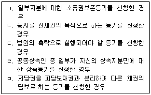
- ㄱ, ㄴ, ㅁ
- ㄱ, ㄷ, ㄹ
- ㄱ, ㄷ, ㄹ, ㅁ
- ㄴ, ㄷ, ㄹ, ㅁ
- ㄱ, ㄴ, ㄷ, ㄹ, ㅁ
(정답률: 28%)
95. 등기필정보에 관한 설명으로 틀린 것은?
- 승소한 등기의무자가 단독으로 등기신청을 한 경우, 등기필정보를 등기권리자에게 통지하지 않아도 된다.
- 등기관이 새로운 권리에 관한 등기를 마친 경우, 원칙적으로 등기필정보를 작성하여 등기권리자에게 통지해야 한다.
- 등기권리자가 등기필정보를 분실한 경우, 관할등기소에 재교부를 신청할 수 있다.
- 승소한 등기의무자가 단독으로 권리에 관하 등기를 신청하는 경우, 그의 등기필정보를 등기소에 제공해야 한다.
- 등기관이 법원의 촉탁에 따라 가압류등기를 하기 위해 직권으로 소유권보존등기를 한 경우, 소유자에게 등기필정보를 통지하지 않는다.
(정답률: 28%)
96. 甲이 그 소유의 부동산을 乙에게 매도한 경우에 관한 설명으로 틀린 것은?
- 乙이 부동산에 대한 소유권을 취득하기 위해서는 소유권이전등기를 해야 한다.
- 乙은 甲의 위임을 받더라도 그의 대리인으로서 소유권이전등기를 신청할 수 없다.
- 乙이 소유권이전등기신청에 협조하지 않는 경우, 甲은 乙에게 등기신청에 협조할 것을 소구(訴求)할 수 있다.
- 甲이 소유권이전등기신청에 협조하지 않는 경우, 乙은 승소판결을 받아 단독으로 소유권이전등기를 신청할 수 있다.
- 소유권이전등기가 마쳐지면, 乙은 등기신청을 접수한때 부동산에 대한 소유권을 취득한다.
(정답률: 31%)
97. 가등기에 관한 설명으로 틀린 것은? (다툼이 있으면 판례에 따름)
- 소유권보존등기를 위한 가등기는 할 수 없다.
- 소유권이전청구권이 장래에 확정될 것인 경우, 가등기를 할 수 있다.
- 가등기된 권리의 이전등기가 제3자에게 마쳐진 경우, 그 제3자가 본등기의 관리자가 된다.
- 가등기권리자가 여럿인 경우, 그 중 1인이 공유물보존 행위에 준하여 가등기 전부에 관한 본등기를 신청할 수 있다.
- 가등기권리자가 가등기에 의한 본등기로 소유권이전등기를 하지 않고 별도의 소유권이전등기를 한 경우, 그 가등기 후에 본등기와 저촉되는 중간등기가 없다면 가등기에 의한 본등기를 할 수 없다.
(정답률: 21%)
98. 수용으로 인한 등기에 관한 설명으로 옳은 것을 모두 고른 것은?
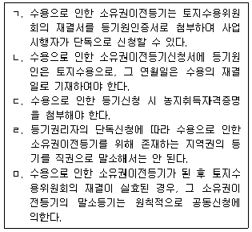
- ㄱ, ㄴ, ㄷ
- ㄱ, ㄷ, ㄹ
- ㄱ, ㄹ, ㅁ
- ㄴ, ㄷ, ㅁ
- ㄴ, ㄹ, ㅁ
(정답률: 31%)
99. 합유등기에 관한 설명으로 틀린 것은?
- 민법상 조합의 소유인 부동산을 등기한 경우, 조합원 전원의 명의로 합유등기를 한다.
- 합유등기를 하는 경우, 합유자의 이름과 각자의 지분비율이 기록되어야 한다.
- 2인의 함유자 중 1인이 사망한 경우, 잔존 합유자는 그의 단독소유로 합유명의인 변경등기신청을 할 수 있다.
- 합유자 중 1인이 다른 합유자 전원의 동의를 얻어 합유지분을 처분하는 경우, 지분이전등기를 신청할 수 없다.
- 공유자 전원이 그 소유관계를 함유로 변경하는 경우, 변경계약을 등기원인으로 변경등기를 신청해야 한다.
(정답률: 30%)
100. 등기신청의 각하결정에 대한 이의신청에 따라 관할법원이 한 기록명령에 의하여 등기를 할 수 있는 경우는?
- 소유권이전등기의 기록명령이 있었으나, 그 기록명령에 따른 등기 전에 제3자 명의로 저당권등기가 되어 있는 경우
- 권리이전등기의 기록명령이 있었으나 그 기록명령에 따란 등기 전에 제3자 명의로 권리이전등기가 되어 있는 경우
- 말소등기의 기록명령이 있었으나 그 기록명령에 따른 등기 전에 등기상 이해관계인이 발생한 경우
- 등기관이 기록명령에 따른 등기를 하기 위해 신청인에게 첨부정보를 다시 등기소에 제공할 것을 명령했으나 신청인이 이에 응하지 않은 경우
- 전세권설정등기의 기록명령이 있었으나 그 기록명령에 따른 등기 전에 동일한 부분에 전세권등기가 되어 있는 경우
(정답률: 18%)
101. 소유권보존등기에 관한 설명으로 틀린 것은?
- 토지에 대한 소유권보존등기의 경우, 등기원인과 그 연월일을 기록해야 한다.
- 토지에 대한 기존의 소유권보존등기를 말소하지 않고는 그 토지에 대한 소유권보존등기를 할 수 없다.
- 군수의 확인에 의해 미등기 건물이 자기의 소유임을 증명하는 자는 소유권보존등기를 신청할 수 있다.
- 건물소유권보존등기를 신청하는 경우, 건물의 표시를 증명하는 첨부정보를 제공해야 한다.
- 미등기 주택에 대해 임차권등기명령에 의한 등기촉탁이 있는 경우, 등기관은 직권으로 소유권보존등기를 한 후 임차권등기를 해야 한다.
(정답률: 27%)
102. 부기등기를 하는 경우가 아닌 것은?
- 환매특약등기
- 권리소멸약정등기
- 전세권을 목적으로 하는 저당권설정등기
- 저당부동산의 저당권실행을 위한 경매개시결정등기
- 등기상 이해관계 있는 제3자의 승낙이 있는 경우, 권리의 변경등기
(정답률: 25%)
103. 저당권등기에 관한 설명으로 옳은 것은?
- 변제기는 저당권설정등기의 필요적 기록사항이다.
- 동일한 채권에 관한 2개 부동산에 저당권설정등기를 할 때는 공동담보목록을 작성해야 한다.
- 채권의 일부에 대하여 양도로 인한 저당권 일부이전등기를 할 때 양도액을 기록해야 한다.
- 일정한 금액을 목적으로 하지 않는 책권을 담보하는 저당권설정의 등기는 채권평가액을 기록할 필요가 없다.
- 공동저당 부동산 중 일부의 매각대금을 먼저 배당하여 경매부동산의 후순위 저당권자가 대위등기를 할 때, 매각대금을 기록하는 것이 아니라 선순위 저당권자가 변제받은 금액을 기록해야 한다.
(정답률: 28%)
104. 공유에 관한 등기에 대한 설명으로 옳은 것은? (다툼이 있으면 판례에 따름)
- 미등기 부동산의 공유자 중 1인은 전체 부동산에 대한 소유권보존등기를 신청할 수 없다.
- 공유자 중 1인의 지분포기로 인한 소유권이전등기는 지분을 포기한 공유자가 단독으로 신청한다.
- 등기된 공유물 분할금지기간 약정을 갱신하는 경우, 공유자 중 1인이 단독으로 변경을 신청할 수 있다.
- 건물의 특정부분이 아닌 공유지분에 대한 전세권설정 등기를 할 수 있다.
- 1필의 토지 일부를 특정하여 구분소유하기로 하고 1필지 전체에 공유지분등기를 마친 경우, 대외관계에서는 1필지 전체에 공유관계가 성립한다.
(정답률: 23%)
1⑤. 국내 소재 부동산의 보유단계에서 부담할 수 있는 세목은 모두 몇 개인가?
- 0개
- 1개
- 2개
- 3개
- 4개
(정답률: 22%)
106. 지방세기본법상 이의신청·심사청구·심판청구에 관한 설명으로 틀린 것은?
- 「지방세기본법」에 따른 과태료의 부과처분을 받은 자는 이의신청, 심사청구 또는 심판청구를 할 수 없다.
- 심판청구는 그 처분의 집행에 효력이 미치지 아니하지만 압류한 재산에 대하여는 심판청구의 결정이 있는 날부터 30일까지 그 공매처분을 보류할 수 있다.
- 지방세세 관한 불복시 불복청구인은 심사청구를 거치지 아니하면 행정소송을 제기할 수 없다.
- 이의신청인은 신청금액이 1천만원 미만인 경우에는 그의 배우자, 4촌 이내의 혈족 또는 그의 배우자의 4촌 이내 혈족을 대리인으로 선임할 수 있다.
- 심사청구가 이유 없다고 인정될 때에는 청구를 기각하는 결정을 한다.
(정답률: 19%)
107. 법정기일 전에 저당권의 설정이 등기한 사실이 등기사항증명서(부동산등기부 등본)에 따라 증명되는재산을 매각하여 그 매각금액에서 국세 또는 지방세를 징수하는 경우, 그 재산에 대하여 부관되는 다음의 국세 또는 지방세 중 저당권에 따라 담보된 채권에 우선하여 징수하는 것은 모두 몇 개인가? (단, 가산금은 고려하지 않음)
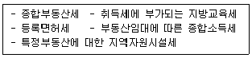
- 1개
- 2개
- 3개
- 4개
- 5개
(정답률: 24%)
108. 지방세법상 취득의 시기에 관한 설명으로 틀린 것은?
- 상속으로 인한 취득의 경우: 상속개시일
- 공매방법에 의한 취득의 경우: 그 사실상의 잔금지급일과 등기일 또는 등록일 중 빠른 날
- 건축물(주택 아님)을 건축하여 취득하는 경우로서 사용승인서를 내주기 전에 임시사용승인을 받은 경우: 그 임시사용승인일과 사실상의 사용일 중 빠른 날
- 「민법」제839조의 2에 따른 재산분할로 인한 취득의 경우: 취득물건의 등기일 또는 등록일
- 관계 법령에 따라 매립으로 토지를 원시취득하는 경우: 취득물건의 등기일
(정답률: 30%)
109. 지방세법상 취득세가 부과되지 않는 것으?
- 「주택법」에 따른 공동주택의 개수(「건축법」에 따른 대수선 제외)로 인한 취득 중 개수로 인한 취득 당시 주택의 시가표준액이 9억원 이하인 경우
- 형제간에 부동산을 상호교환한 경우
- 직계존속으로부터 거주하는 주택을 증여받은 경우
- 파산신고로 인하여 처분되는 부동산을 취득한 경우
- 「주택법」에 따른 주택조합이 해당 조합원용으로 조합주택용 부동산을 취득한 경우
(정답률: 28%)
110. 지방세법상 취득세의 표준세율이 가장 높은 것은? (단, 「지방세특례제한법」은 고려하지 않음)(오류 신고가 접수된 문제입니다. 반드시 정답과 해설을 확인하시기 바랍니다.)
- 상속으로 건물(주택 아님)을 취득한 경우
- 「사회복지사업법」에 따라 설립된 사회복지법인이 독지가의 기부에 의하여 건물을 취득한 경우
- 영리법인이 공유수면을 매립하여 농지를 취득한 경우
- 유상거래를 원인으로 「지방세법」제10조에 따른 취득 당시의 가액이 9억원인 주택(「주택법」에 의한 주택으로서 등기부에 주택으로 기재된 주거용 건축물과 그 부속토지)을 취득한 경우
- 유상거래를 원인으로 농지를 취득한 경우
(정답률: 22%)
111. 지방세법상 재산세 표준세율이 초과누진세율로 되어 있는 재산세 과세대상을 모두 고른 것은?
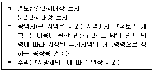
- ㄱ, ㄴ
- ㄱ, ㄷ
- ㄱ, ㄹ
- ㄴ, ㄷ
- ㄷ, ㄹ
(정답률: 25%)
112. 지방세법상 재산세 비과세 대상에 해당하는 것은? (단, 주어진 조건 외에는 고려하지 않음)
- 지방자치단체가 1년 이상 공용으로 사용하는 재산으로서 유료로 사용하는 재산
- 「한국농어촌공사 및 농지관리기금법」에 따라 설립된 한국농어촌공사가 같은 법에 따라 공급하기 위하여 소유하는 농지
- 「공간정보의 구축 및 관리 등에 관한 법률」에 따른 제방으로서 특정인이 전용하는 제방
- 「군사기지 및 군사시설 보호법」에 따른 군사기지 및 군사시설 보호구역 중 통제보호구역에 있는 전·담
- 「산림자원의 조성 및 관리에 관한 법률」에 따라 지정된 채종림·시험림
(정답률: 30%)
113. 지방세법상 재산세에 관한 설명으로 옳은 것은?
- 건축물에 대한 재산세의 납기는 매년 9월 16일에서 9월 30일이다.
- 재산세의 과세대상 물건이 공부상 등재 현황과 사실상의 현황이 다른 경우에는 공부상 현황에 따라 재산세를 부과한다.
- 주택에 대한 재산세는 납세의무자별로 해당 지방자치단체의 관할구역에 있는 주택의 과세표준을 합산하여 주택의 세율을 적용한다.
- 지방자치단체의 장은 재산세의 납부세액(재산세 도시지역분 포함)이 1천만원을 초과하는 경우에는 납세의무자의 신청을 받아 해당 지방자치단체의 관할구역에 있는 부동산에 대하여만 대통령령으로 정하는 바에 따라 물납을 허가할 수 있다.
- 주택에 대한 재산세의 과세표준은 시가표준액의 100분의 70으로 한다.
(정답률: 24%)
114. 지방세법상 등록면허세에 관한 설명으로 틀린 것은?
- 부동산 등기에 대한 등록면허세의 납세는 부동산 소재지이다.
- 등록을 하려는 자가 법정신고기한까지 등록면허세 산출세액을 신고하지 않은 경우로서 등록 전까지 그 산출세액을 납부한 때에도 「지방세기본법」에 따른 무신고가산세가 부과된다.
- 등기 담당 공무원의 착오로 인한 지번의 오기에 대한 정정 등기에 대해서는 등록면허세를 부과하지 아니한다.
- 채권금액으로 과세액을 정하는 경우에 일정한 채권금액이 없을 때에는 채권의 목적이 된것의 가약 또는 처분의 제한의 목적이 된 금액을 그 채권금액으로 본다.
- 「한국은행법」및「한국수출입은행법」에 따른 은행업을 영위하기 위하여 대도시에서 법인을 설립함에 따른 등기를 한 법인이 그 등기일부터 2년 이내의 업종변경이나 업종 추가가 없는 때에는 등록면허세의 세율을 중과하지 아니한다.
(정답률: 26%)
115. 소득세법상 거주자가 국내에 있는 자산을 양도한 경우 양도소득과세표준에 적용되는 세율로 틀린 것은? (단, 주어진 자산 외에는 고려하지 않음) (문제 오류로 실제 시험에서는 모두 정답처리 되었습니다. 여기서는 1번을 누르면 정답처리 됩니다.)
- 보유기간이 1년 이상 2년 미만인 등기된 상업용 건물: 100분의 40
- 보유기간이 1년 미만인 조합원입주권: 100분의 40
- 거주자가 조정대상지역의 공고가 있은 날 이전에 주택의 입주자가 선정된 지위를 양도하기 위한 매매계약을 체결하고 계약금을 지급받은 사실이 증빙서류에 의하여 확인되는 경우 그 조정대상지역 내 주택의 입주자로 선정된 지위: 100분의 50
- 양도소득과세표준이 1,200만원 이하인 등기된 비사업용 토지(지정지역에 있지 않음): 100분의 16
- 미등기건물(미등기양도제외 자산 아님): 100분의 70
(정답률: 27%)
116. 소득세법상 국내에 있는 자산의 기준시가 산정에 관한 설명으로 틀린 것은?
- 개발사업 등으로 지가가 급등하거나 급등우려가 있는 지역으로서 국세청장이 지정한 지역에 있는 토지의 기준시가가는 배율방법에 따라 평가한 가액으로 한다.
- 상업용 건물에 대한 새로운 기준시가가 고시되기 전에 취득 또는 양도하는 경우에는 직전의 기준시가에 의한다.
- 「민사집행법」에 의한 저당권실행을 위하여 토지가 경매되는 경우의 그 경락가액이 개별공시지가 보다 낮은 경우에는 그 차액을 개별공시지가에서 차감하여 양도 당시 기준시가를 계산한다.(단, 지가 급등 지역 아님)
- 부동산을 취득할 수 있는 권리에 대한 기준시가는 양도 자산의 종류를 고려하여 취득일 또는 양ㄷ일까지 납입한 금액으로 한다.
- 국세청장이 지정하는 지역에 있는 오피스텔의 기준시가는 건물의 종류, 규모, 거래상황, 위치 등을 고려하여 매년 1회 이상 국세청장이 토지와 건물에 대하여 일괄하여 산정·고시하는 가액으로 한다.
(정답률: 18%)
117. 거주자 甲은 국내에 있는 양도소득세 과세대상 X토지를 2010년 시가 1억원에 매수하여 배우자 乙에게 증여하였다. X토지에는 甲의 금융기관 차입금 5천만원에 대한 저당권이ㅣ 설정되어 있으며 乙이 이를 인수한 사실은 채무부담계약서에 의하여 확인되었다. X 토지의 증여가액과 증여시 「상속세 및 증여세법」에 따라 평가한 가액(시가)은 각각 2억원이었다. 다음 중 틀린 것은?
- 배우자 간 부담부증여로서 수중자에게 인수되지 아니한 것으로 추정되는 채무액은 부담부증여의 채무액에 해당하는 부분에서 제외한다.
- 乙이 인수한 채무 5천만원에 해당하는 부분은 양도로 본다.
- 양도로 보는 부분의 취득가액은 2천5백만원이다.
- 양도로 보는 부분의 양도가액은 5천만원이다.
- 甲이 X토지와 증여가액(시가) 2억원인 양도소득세 과세 대상에 해당하지 않는 Y자산을 함께 乙에게 부담부증여하였다면 乙이 인수한 채무 5천만원에 해당하는 부분은 모두 X토지에 대한 양도로 본다.
(정답률: 21%)
118. 소득세법상 농지에 관한 설멸으로 틀린 것은?
- 농지란 논밭이나 과수원으로서 지적공부의 지목과 관계없이 실제로 경작에 사용되는 토지를 말하며, 농지의 경영에 직접 필요한 농막, 퇴비사, 양수장, 지소(池沼), 농도(農道), 및 수로(水路) 등에 사용되는 토지를 포함한다.
- 「국토의 계획 및 이용에 관한 법률」에 따른 주거지역·상업지역·공업지역 외에 이는 농지(환지예정지 아님)를 경작상 필요에 의하여 교환함으로써 발생한 소득은 쌍방 토지가액의 차액이 가액이 큰 편의 4분의 1이하이고 새로이 취득한 농지를 3년 이상 농지소재지에 거주하면서 경작하는 경우 비과세한다.
- 농지로부터 직선거리 30킬로미터 이내에 있는 지역에 사실상 거주하는 자가 그 소유농지에서 농작업의 2분의 1이상을 자기의 노동력에 의하여 경작하는 경우 비사업용 토지에서 제외한다.(단, 농지는 도시지역 외에 있으며, 소유기간 중 재촌과 자경에 변동이 없고 농업에서 발생한 소득 이외에 다른 소득은 없음)
- 「국토의 계획 및 이용에 관한 법률」에 따른 개발제한 구역에 있는 농지는 비사업용 토지에 해당한다.(단, 소유기간 중 개발제한구역 지정·변경은 없음)
- 비상업용 토지에 해당하는지 여부를 판단함에 있어 농지으 판정은 소득세법령상 규정이 있는 경우를 제외하고 사실상의 현황에 의하며 사실상의 현황이 분명하지 아니한 경우에는 공부상의 등재현황에 의한다.
(정답률: 23%)
119. 거주자 甲이 국외에 있는 양도소득세 과세대상 X토지를 양도함으로써 소득이 발생하였다. 다음 중 틀린 것은?(단, 해당 과세기간에 다른 자산의 양도는 없음)
- 甲이 X토지의 양도일까지 계속 5년 이상 국내에 주소 또는 거소를 둔 경우에만 해당 양도소득에 대한 납세의무가 있다.
- 甲이 국외에서 외화를 차입하여 X토지를 취득한 경우 환율변동으로 인하여 외화차입금으로부터 발생한 환차익은 양도소득의 범위에서 제외한다.
- X토지의 양도가액은 양도 당시의 실지거래가액으로 하는 것이 원칙이다.
- X토지에 대한 양도차익에서 장기보유특별공제액을 공제한다.
- X토지에 대한 양도소득금액에서 양도소득 기본공제로 250만원을 공제한다.
(정답률: 30%)
120. 2019년 귀속 종합부동산에 관한 설명으로 틀린 것은?
- 과세기준일 현재 토지분 재산세의 납세의무자로서 「자연공원법」에 따라 지정된 공원자연환경지구의 임야를 소유하는 자는 토지에 대한 종합부동산세를 납부할 의무가 있다.
- 주택분 종합부동산세 납세의무자가 1세대 1주택자에 해당하는 경우의 주택분 종합부동산세액 계산시 연령에 따른 세액공제와 보유기간에 따른 세액공제는 공제율 합계 100분의 70의 범위에서 중복하여 적용할 수 있다.
- 「문화재보호법」에 따른 등록문화재에 해당하는 주택은 과세표준 합산의 대상이 되는 주택의 범위에 포함되지 않는 것으로 본다.
- 관할세무서장은 종합부동산세로 납부하여야 할 세액이 400만원인 경우 최대 150만원의 세액을 납부기한이 경과한 날부터 6개월 이내에 분납하게 할 수 있다.
- 주택분 종합부동산세액을 계산할 때 1주택을 여러 사람이 공동으로 매수하여 소유한 경우 공동 소유자 각자가 그 주택을 소유한 것으로 본다.
(정답률: 21%)